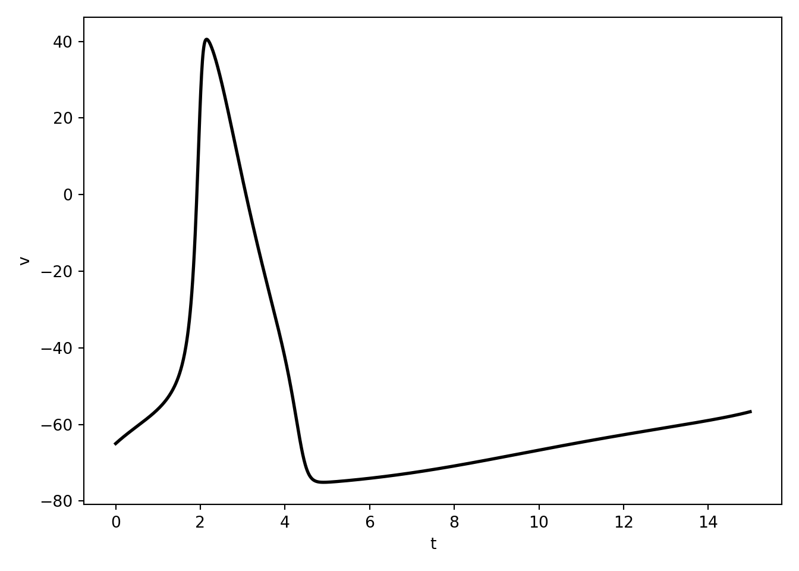
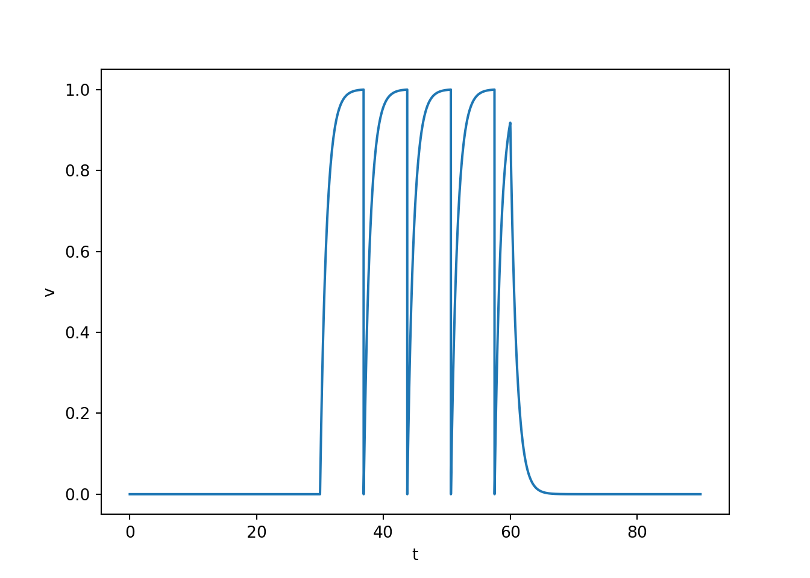
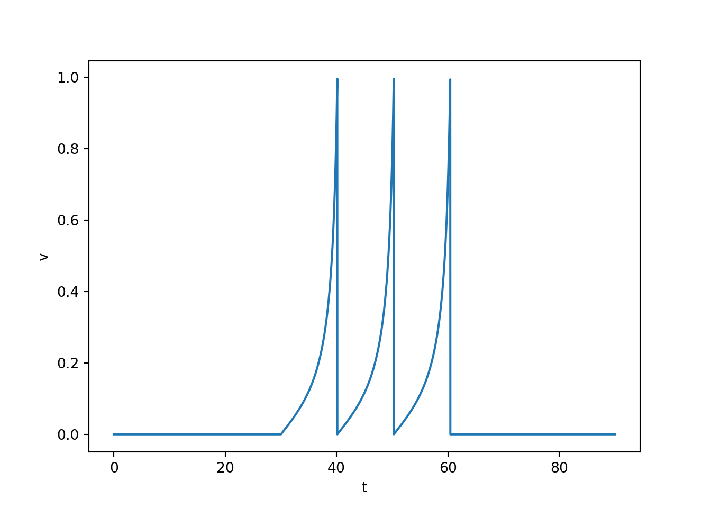
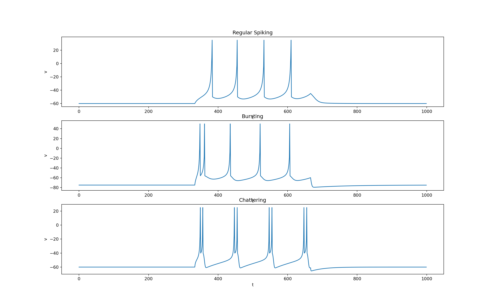

6 Simple neuron models
6.1 Review of HH
\[ C \frac{d}{dt}V = I - \overline{g}_{K} n^4 (V - E_{K}) - \overline{g}_{Na} m^3 h (V - E_{Na}) - \overline{g}_{L} (V - E_{L})\\ \frac{d}{dt}n = (n_{\infty}(V) - n) / \tau(V) \\ \frac{d}{dt}m = (m_{\infty}(V) - m) / \tau(V) \\ \frac{d}{dt}h = (h_{\infty}(V) - h) / \tau(V) \\ \]
HH model is an example of a conductance-based model
One advantage of conductance-based models is that their parameters have well-defined biophysical meanings.
However, this does not mean that measuring the true value of these parameters is easy. Rather, it is often difficult and noisy.
Furthermore, it is difficult to ensure the model will behave like a real neuron outside the stimulation protocols used to measure model parameters.

6.2 Leaky integrate and fire
\[ \frac{d}{dt} v(t) = b - v(t) \\ \text{if } v(t) = 1, \text{then } v(t) \leftarrow 0 \]
Linearly adds up inputs until the membrane potential crosses a threshold, at which point a spike is triggered, and the membrane potential is reset.
Spikes are all-or-none assumed to be identical in size and duration.
Spikes aren’t actually part of the stimulation. They are just hand drawn in when threshold is crossed.
There can be something of a refractory period if the reset potential is set to hyperpolarize the membrane potential.
The amplitude of an input is linearly encoded into the frequency of spiking. This is called Class 1 excitability.
import numpy as np
import matplotlib.pyplot as plt
T = 90
tau = 0.01
t = np.arange(0, T, tau)
n = t.shape[0]
v = np.zeros(n)
b = np.concatenate(([0.0] * (t.shape[0] // 3),
[1.001] * (t.shape[0] // 3),
[0.0] * (t.shape[0] // 3)))
for i in range(1, n):
dvdt = b[i-1] - v[i-1]
dt = t[i] - t[i-1]
v[i] = v[i-1] + dvdt * dt
if v[i] > 1:
v[i] = 0
fig, ax, = plt.subplots(1, 1, squeeze=False)
ax[0, 0].plot(t, v)
ax[0, 0].set_ylabel('v')
ax[0, 0].set_xlabel('t')
plt.show()
6.3 Quadratic integrate and fire
\[ \frac{d}{dt} v(t) = b + v^2(t) \\ \text{if } v(t) = v_{\text{peak}}, \text{then } v(t) \leftarrow v_{\text{reset}} \]
It is the simplest truly spiking model. That is, they are the simplest of models in which the upstroke of an action potential is generated by the differential equations themselves.
It basically does all of the things the leaky integrate and fire neuron does but way better and with none of the weird issues stemming from hand drawing spikes.
import numpy as np
import matplotlib.pyplot as plt
T = 90
tau = 0.01
t = np.arange(0, T, tau)
n = t.shape[0]
v = np.zeros(n)
vreset = 0
vpeak = 1
v[0] = vreset
b = np.concatenate(([0.0] * (n // 3),
[0.02] * (n // 3),
[0.0] * (n // 3)))
for i in range(1, t.shape[0]):
dvdt = b[i-1] + v[i-1]**2
dt = t[i] - t[i-1]
v[i] = v[i-1] + dvdt * dt
if v[i] > vpeak:
v[i] = vreset
fig, ax, = plt.subplots(1, 1, squeeze=False)
ax[0, 0].plot(t, v)
ax[0, 0].set_ylabel('v')
ax[0, 0].set_xlabel('t')
plt.show()
6.4 Izhikevich Neuron
\[ \begin{align} C \frac{d}{dt} v(t) &= k(v(t) - v_r) (v(t) - v_t) - u(t) + I(t) \\ \frac{d}{dt} u(t) &= a \big(b(v(t) - v_r) - u(t)\big) \\ \text{ if} &\quad v(t) > v_{\text{peak}} \\ \text{ then} &\quad v(t) \leftarrow c, \quad u(t) \leftarrow u(t) + d \end{align} \]
System of two coupled differential equations comprised of a fast voltage variable \(v\) and a slow recovery variable \(u\).
All slow currents that modulate spike generation are combined in the variable \(u\) (e.g., the activation of the K\(^+\) current or inactivation of the Na\(^+\) current or their combination).
Main advantage over quadratic integrate-and-fire is that it can capture a wide variety of spiking behaviour (e.g., bursting, chattering, etc.) as well as interesting subthreshold dynamics leading to spikes.
The parameters \(k\) and \(b\) can be found when one knows the neuron’s rheobase and input resistance. The rheobase is roughly the minimal amplitude of continuous current that causes the membrane potential to reach the depolarization threshold.
The sign of \(b\) determines whether \(u\) is an amplifying (\(b < 0\)) or a resonant (\(b > 0\)) variable. In the latter case, the neuron sags in response to hyperpolarized pulses of current, peaks in response to depolarized subthreshold pulses, and produces rebound (postinhibitory) responses.
The parameter \(a\) is the recovery time constant.
The spike cutoff value is \(v_{\text{peak}}\), and the voltage reset value is \(c\).
The parameter \(d\) describes the total amount of outward minus inward currents activated during the spike and affecting the after-spike behaviour.
To examine the wide array of behaviours this model can generate without re-writing many lines of code, it will be helpful to use the following function:
import numpy as np
import matplotlib.pyplot as plt
def izn(shape_params, spike_params, t_params, I):
(a, b, c, d, k, C) = shape_params
(vr, vt, vpeak) = spike_params
(T, tau, t, n) = t_params
u = np.zeros(n)
v = np.zeros(n)
v[0] = vr
for i in range(1, n):
dvdt = (k * (v[i - 1] - vr) *
(v[i - 1] - vt) - u[i - 1] + I[i - 1]) / C
dudt = a * (b * (v[i - 1] - vr) - u[i - 1])
dt = t[i] - t[i - 1]
v[i] = v[i - 1] + dvdt * dt
u[i] = u[i - 1] + dudt * dt
if v[i] > vpeak:
v[i - 1] = vpeak
v[i] = c
u[i] = u[i] + d
return v, u- We can now control what type of neuron behaviour we get simply by setting the shape and spike parameters as follows.
T = 1000
tau = 1
t = np.arange(0, T, tau)
n = t.shape[0]
I = np.zeros(n)
I[n // 3:(2 * n // 3)] = 1
# Regular Spiking
C = 100
vr = -60
vt = -40
vpeak = 35
a = 0.03
b = -2
c = -50
d = 100
k = 0.7
spike_params_regular_spiking = (vr, vt, vpeak)
shape_params_regular_spiking = (a, b, c, d, k, C)
# bursting
C = 100
vr = -75
vt = -45
vpeak = 50
a = 0.01
b = 5
c = -56
d = 130
k = 1.2
spike_params_bursting = (vr, vt, vpeak)
shape_params_bursting = (a, b, c, d, k, C)
# chattering
C = 50
vr = -60
vt = -40
vpeak = 25
a = 0.03
b = 1
c = -40
d = 150
k = 1.5
spike_params_chattering = (vr, vt, vpeak)
shape_params_chattering = (a, b, c, d, k, C)
t_params = (T, tau, t, n)
v_regular_spiking, u_regular_spiking = izn(shape_params_regular_spiking,
spike_params_regular_spiking,
t_params,
I * 100)
v_bursting, u_bursting = izn(shape_params_bursting,
spike_params_bursting,
t_params,
I * 500)
v_chattering, u_chattering = izn(shape_params_chattering,
spike_params_chattering,
t_params,
I * 200)
fig, ax, = plt.subplots(3, 1, squeeze=False, figsize=(16, 10))
ax = ax.T
ax[0, 0].plot(t, v_regular_spiking)
ax[0, 1].plot(t, v_bursting)
ax[0, 2].plot(t, v_chattering)
ax[0, 0].set_title('Regular Spiking')
ax[0, 0].set_xlabel('t')
ax[0, 0].set_ylabel('v')
ax[0, 1].set_title('Bursting')
ax[0, 1].set_xlabel('t')
ax[0, 1].set_ylabel('v')
ax[0, 2].set_title('Chattering')
ax[0, 2].set_xlabel('t')
ax[0, 2].set_ylabel('v')
plt.show()